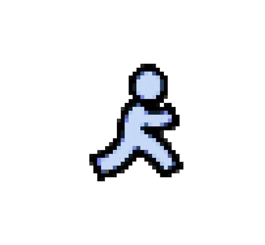

HomeI’m Arshiya, a full-stack developer and designer at UT Dallas, where I earned a 4.0 GPA in my first semester. I build user-focused solutions across web, IoT, and intelligent systems.
My work includes SeeSense Stop, an IoT + OpenCV security system, and Finding Nemo, a healthcare patient tracking solution. I develop applications using React, Node.js, Python, and Arduino.
I’m passionate about AI, rapid prototyping, and solving real-world problems through technology, and have participated in hackathons including the Verizon Hackathon and Sterlo’s Ideathon (2nd place).
Beyond tech, I’m a state-level 10m air rifle champion, bringing precision and discipline into everything I build.